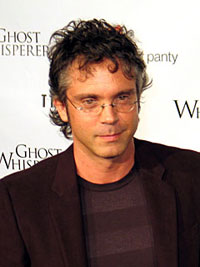
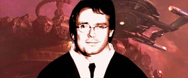
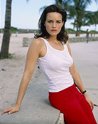
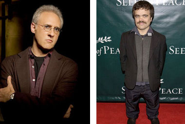
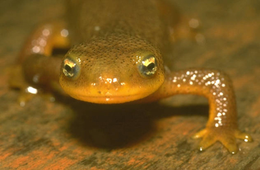

|
por Lucsly e Dulmer (Agentes Temporais da Frota Estelar)
O
impensvel aconteceu! Voc tem um plano?  Com
certeza, Deus existe e tem senso de humor, principalmente se o leitor acha que
o roteirista e produtor Brannon Braga de fato o anti-cristo de Jornada nas
Estrelas. No dia 28 de agosto de 2006, s 20h, estria no canal a cabo AXN
Threshold, a ironicamente intitulada srie de TV, projeto
solo de Braga, que mostra enfim, de forma inequvoca, tudo o que homem pensa sobre
como deve ser uma srie televisiva de fico cientfica. Sua coerncia histrica
em tal sentido , alis, deveras marcante, confirmando o que poucos hoje em dia
ousam discutir: sua exata contribuio para Jornada. Saiba mais nas linhas abaixo
sem precisar ter seu DNA alterado no processo.
A
Jornada de Braga... Em
1990, o jovem Brannon Braga, ento com 25 anos, desembarcava como estagirio na
equipe criativa da srie A Nova Gerao. Seu primeiro trabalho ali (creditado)
foi uma rescrita no roteiro do episodio Reunion,
da quarta temporada, no qual trabalharam tambm Ronald D. Moore, Thomas Perry e Jo Perry.
Ainda na quarta temporada, Braga faria seu primeiro trabalho solo ao escrever
o roteiro de "Identity Crisis"
baseado na historia do f escritor Timothy de Haas. A
partir da, Braga foi conseguindo mais e mais espao dentro da franquia, (tornando-se
contratado a partir da quinta temporada da srie de Picard e cia. E sendo figura
importante nas sries Voyager e Enterprise
durante todo o tempo que duraram as suas produes) e quem quiser saber mais sobre
esta escalada e da j mais do que infame simbiose de Braga com Rick
Berman (por tantos anos todo-poderoso de Jornada) pode
encontrar mais neste artigo
de Salvador Nogueira, que trata um pouco da instituio B&B, como a dupla
(Braga & Berman) passou a ser conhecida pelos fs
da franquia Jornada na Estrelas. 
O
nome Braga est fortemente ligado a algumas das piores coisas que j foram realizadas
em nome de Jornada nas Estrelas em sua era moderna (da a sua pssima reputao
junto aos fs). Alguns exemplos em A Nova Gerao so The
Game, Realm of Fear,
Schisms, Aquiel, "Sub
Rosa, Force of Nature
e Genesis, entre outros. Voyager
tem nada menos do que 170 episdios que tiveram alguma influncia de Braga, seja
como autor da premissa, do roteiro, como editor de histrias, co-produtor ou qualquer
outra coisa na intricada rede que forma a produo de um episodio de Jornada.
Novamente, quem quiser conhecer esta engrenagem em detalhes, deve recorrer a mais
este outro
artigo do Trek Brasilis, mas se levarmos apenas
em considerao os episdios escritos por ele, encontraremos 51 obras desta verdadeira
mquina de fabricar histórias. E
o que falar de Enterprise, o projeto que sedimentou a parceria B&B
de forma cristalina, mas andou desgovernada durante seus trs primeiros anos e
que s curiosamente conseguiu algum relativo sucesso quando os dois deram as
costas para a srie, e largaram a proverbial rabiola
na mo de Manny Coto? Enfim,
um sem nmero de mazelas. Mas se o nome do homem estava ligado a coisas ruins,
por justia devemos lembrar que existem (poucos verdade) bons episdios das
trs sries que tiveram Braga como referencia. All Good Things...,
First Contact, entre
outros, so exemplos disto. Sendo
assim, quem era o verdadeiro Braga, roteirista e produtor de fico cientfica
televisiva? Poderia a sua carreira em Jornada ser totalmente significativa
do que ele realmente em termos de viso e capacidade trabalho? Faltava a resposta
final a esta pergunta fundamental, e o reconhecimento publico e inequvoco da
capacidade da mente criativa deste cone cultural da milenar arte de fazer bobagens.
Bem... Agora no falta mais. O
limiar entre a incompetncia e arrogncia ingnua foi definitivamente ultrapassado... Threshold
o primeiro projeto solo (e por um bom tempo, o ltimo) de Brannon Braga (que
herdou a srie do seu criador Bragi F. Schut), mas embora ele fosse de fato a cabea pensante (?)
por trs do show, existem claro, outros envolvidos. Os principais sendo: Andr
Bormanis e Mike Susman (ambos
vindo de Enterprise) que co-assinam a produo,
e David S. Goyer (Blade
e Batman Begins) e David
Heyman (Harry Potter) que atuam como produtores executivos da srie ao
lado de Braga.  A
srie gira em torno da Consultora para Gerenciamento de Crises do Governo Americano,
Doutora Molly Caffrey (Carla Gugino de Sin City"(foto)).
Seu trabalho formular planos para tratar emergncias impensveis, na hiptese
delas virem a acontecer. Estas eventuais emergncias podem ser desde desastres
naturais at guerras nucleares, passando por epidemias ou invases aliengenas.
Threshold um destes planos, que foi concebido para
lidar com um hipottico primeiro contato com aliengenas. Sendo tanto o conceito
desta funo, como a existncia de uma pessoa capaz de exerc-la, por si s uma
questo controversa, para dizer o mnimo. Fazendo a srie j partir capenga, sem
o verniz de honesto realismo que por vezes ela acha possuir.
A
premissa desenvolve-se ento na formao de uma equipe de especialistas formada
por Caffrey para lidar com uma situao de primeiro contato aliengena,
o Red Team. Quando um O.V.N.I.
detectado caindo no oceano, e a Marinha perde contato com um de seus navios
que se encontrava perto do local da queda, um dos protocolos criado por Caffrey,
o Threshold, imediatamente acionado para lidar com
a situao. A
equipe descobre que uma raa aliengena desconhecida est tentando reescrever
o DNA dos seres humanos usando um sinal de udio que consegue alterar a estrutura
gentica de algumas pessoas, conferindo aos infectados habilidades como resistncia,
fora e um fator de cura sobre-humanos, porm matando algumas vtimas no processo,
e concluem que se trata do preldio de uma invaso. Aliado
a isto existe tambm um misterioso padro fractal que passa a aparecer em todo
lugar, pois mais estranhos e sem nexo que possam parecer. Tal padro interpretado
pelo baixinho Ransen com sendo uma representao de
um padro de DNA em forma hlice tripla, supostamente um padro de DNA aliengena. A partir da a equipe passa a procurar por qualquer
pista sobre o suposto plano de invaso. Inicialmente tentando rastrear os sobreviventes
infectados do navio Big Horn. 
Fazem
parte do Red Team: Dr. Nigel Fenway (Brent Spiner), um temperamental
mdico e microbiologista da NASA, Lucas Pegg (Robert
Patrick Benedict), engenheiro aeroespacial com problemas de (falta de) autoconfiana,
Arthur Ramsey (Peter Dinklage), matemtico e lingista com problemas de vcios
de toda sorte e altura (o homem um ano) e Sean Cavennaugh (Brian Van Holt), uma espcie de agente
especial, que trabalha para o Governo como autnomo, e que tem um passado misterioso
do qual nada se sabe. Temos
ainda J.T. Baylock (Charles S. Dutton), Conselheiro de Segurana Nacional, a quem Caffrey responde diretamente. Antes de seu cancelamento, a
srie receberia ainda o reforo regular de Catherine Bell, como Daphne Larson (que chegou a participar
de um episdio antes do cancelamento). Bell mais conhecida pelo publico como
Major Sarah MacKenzie, da Serie JAG. Sendo difcil apontar o farto busto de Bell
como razo para o cancelamento, devemos voltar raiz (sem dentes humanos, bem
entendido) dos nossos problemas. Como tudo comeou criativamente falando para
a srie. O
episodio que deu origem srie ( A.K.A. Estudo da Mente Criativa do Mestre) Brannon
Braga considerado (com justia) o rei dos chamados High
Concepts (histrias que voc pode definir em uma frase) em
Jornada nas Estrelas, e o ambiente de A Nova Gerao, onde (normalmente)
cada episdio contava uma histria sem nenhuma conexo com a prxima ou a anterior,
permitiu que este conceito fosse levado a sua mxima potncia. Desta forma, iremos
encontrar um sem nmero de defeitos de Holodeck, anomalias
temporais, falhas de teletransporte, e mutaes genticas
(entre outras tramas menos cotadas) em sua obra. Olhando
para o legado de Braga, uma mente mais aguada e observadora perceber que existe
um padro na escolha de temas que serviro como impulso para suas historias. Parece
que Braga vem tentando, anos aps ano, refinar o gnero que ele adotou nos anos
em que esteve frente de vrios projetos de Jornada. Para efeito deste
artigo, chamam a nossa ateno as mutaes genticas. Comeando
por A Nova Gerao, temos a primeira referncia do trabalho anterior
de Braga, em "Identity Crisis". Geordi La Forge
contatado por uma ex-colega que o acompanhou em um grupo avanado numa misso
cinco anos antes. Esta conta que o resto da equipe desapareceu, aps ter retornado
ao planeta. A Dra. Crusher descobre que o DNA da amiga do engenheiro-chefe est
sendo rescrito por um parasita, transformando-a em uma espcie diferente. Pouco
tempo depois, o engenheiro tambm passa a sofrer do mesmo mal que a atingiu. Em
Aquiel, a Enterprise de depara com uma criatura capaz de reproduzir
qualquer espcie com a qual tenha contato fsico. A chave para tal poder o seu
DNA. Em Gnesis, tentando curar uma gripe no hipocondraco Barclay, a Doutora Cruhser libera
uma clula sinttica na Enterprise, que adquire as caractersticas
de um vrus e se espalha pelo ar, contaminando cada membro da tripulao, causando
a involuo de cada um deles. Como resultado, Deanna Troi se transforma em uma
anfbia, extinta a milhes de anos, Worf em uma besta
Klingon, Riker em um Australopithecus,
Barclay em uma espcie de aranha (!) e Spot (o gato
de Data) em um Iguana
(!?). Em
Voyager, o gnio criativo de Braga testado em todos os limites, e para
no estender demais o presente artigo, vamos nos ater a sua mais fundamental
contribuio para Jornada nas Estrelas, ou mesmo para a fico-cientifica,
e por que no, para a prpria Cincia universal. certo afirmar que, quem acompanha
Jornada nas Estrelas com um mnimo de ateno lembra imediatamente do episodio
homnimo de Voyager quando ouve pela primeira vez o nome desta nova srie.
O
roteiro daquele segmento de Voyager tambm chamado "Threshold"
(da a referida ironia do pargrafo inicial) conta como Tom Paris, Harry Kim e B'Elanna Torres modificam uma nave auxiliar a fim de tentarem
alcanar dobra 10, e assim, levar a USS Voyager de volta para casa. Mas
o que importa para este atual artigo o fator de convergncia. L, como resultado
do vo em transdobra, Tom Paris tem a bioqumica de seu corpo alterada,
e seu DNA comea a se transformar, causando diversas mudanas radicais em seu
organismo. Conclui-se que Paris est evoluindo para o prximo estgio da humanidade.
No futuro imaginado por Braga, seremos todos Salamandras (e no Iguanas, bem entendido).
No fim tudo se resolve, mas impossvel no notar a semelhana bvia deste, que
considerado o pior episdio de Voyager (e um dos piores de Jornada
nas Estrelas) com certos aspectos do novo projeto de Braga. Alem
do segmento citado da srie Voyager, existem tambm bvias semelhanas
com o clssico da fico-cientifica The Andromeda Strain
(O Enigma de Andrmeda) de 1971. Filme baseado em um livro de Michael Crichton (Jurassic Park) e dirigido pelo Robert Wise
(Jornada nas Estrelas O Filme). Apos
a queda de um satlite de pesquisa do governo (parte de uma experincia cujo propsito
era coletar quaisquer organismos, como bactrias, que pudessem existir no espao
prximo) em um remoto vilarejo do Novo Mxico, uma elite de cientistas enviada
para investigar o acidente. Quando os pesquisadores
chegam ao local, encontram a populao totalmente dizimada por um organismo de
contaminao area que mata instantaneamente. Apenas um beb e um velho bbado
sobrevivem. O
satlite e os sobreviventes so levados a um complexo cientifico subterrneo conhecido
como Wildfire, onde passam o estudar os dados do incidente causado
pela sua queda. As pesquisas do grupo indicam que as mortes teriam sido causadas
por uma bactria de origem extraterrestre. Tal bactria uma espcie de forma
de vida baseada em cristal que embora contenha os mesmos tomos da vida terrestre,
no contem DNA, protenas e aminocidos o que lhe confere a habilidade de transformar
energia em massa. Quando uma falha na segurana do complexo
acontece, um mecanismo automatizado ativa uma seqncia de detonao de uma bomba
nuclear sob o complexo, que dever erradicar qualquer sinal da doena. Entretanto,
devido facilidade da bactria de transformar energia em massa, o resultado da
exploso seria a mutao da doena e sua imediata disseminao na atmosfera terrestre.
Existem ainda similaridades com U.F.O., srie britnica criada por Gerry
Anderson (Thunderbirds, Space:1999)
em 1970. Voltando
a "Threshold", fcil notar as coincidncias entre
os exemplos citados anteriormente e a nova srie de Braga. Quem quiser e puder
assistir ao filme ento, e depois assistir aos dois primeiros episdios da srie
vai encontrar ainda mais coincidncias. Mas no se trata aqui de afirmar que Braga
copiou esta ou aquela idia (e nem de negar. Isto com o prprio), mas de mostrar
como Braga no consegue ir alm dos (mesmos) high concepts em seus trabalhos, sejam estes quais forem. Parecendo
sempre recriar algo que j teve sucesso antes, sem maiores interesses pessoais
ou uma viso autoral no sentido clssico do termo. Aqui temos personagens que
so absolutamente negligenciados, sendo cada um deles introduzido no piloto em
uma montagem basicamente como: algum que sabe fazer algo para a misso, uma nota
de rodap de personalidade e uma frase de efeito sobre seu lugar na equipe.
difcil escrever algo pior. simplesmente impossvel escrever algo sobre estes
personagens a partir desta introduo, restando avaliar a premissa da srie e
as tramas para legitimar um erro no cancelamento da srie. A premissa lana e
perptua mais m cincia e bizarrices do que o recomendado em uma srie de TV
contempornea, atingindo nveis vergonhosos com freqncia, em particular com
o mencionado sinal que parece aparecer em basicamente todo lugar. As tramas
so pobres e (visivelmente prejudicadas pela grosseira premissa) falham em fornecer
grande escopo para to ambicioso projeto, sepultando a srie sem maiores dvidas.
Trs
negativas do pblico norte-americano as invases aliengenas A
srie estreou na CBS em 16 setembro de 2005, ocupando inicialmente o horrio das
21h, s sextas feiras. No mesmo ms, estreavam duas sries muito similares a "Threshold".
Uma delas era Surface histria centrada na apario de uma misteriosa criatura
martima nas profundezas do oceano, cancelada aps 15 episdios, e Invasion, tambm cancelada aps o 22 episodio. Esta no
parecia ser a hora promissora para invases aliengenas (uma para cada grande
rede americana e as trs para a rpida degola por falta de audincia). "Threshold" foi quem teve merecidamente
a vida mais curta das trs, e dos 13 episdios filmados, apenas nove foram transmitidos
pela CBS, sendo os restantes exibidos pela rede Britnica Sky One. Aps sucessivos problemas
de audincia, a CBS fez uma tentativa jogando a srie para tera-feira noite,
e no dia 22 de novembro de 2005 o episodio "Progeny"
foi transmitido no novo horrio, mas o que j era ruim ficou pior,
e a audincia despencou tanto que, no dia seguinte, a rede anunciaria seu cancelamento,
para tristeza de alguns, alegria de outros e indiferena de muitos. O
telespectador brasileiro agora ter a chance de ver e emitir sua opinio (talvez
definitiva) a respeito do trabalho de Braga. 
Voc
sabia? No
planejado episdio final da primeira temporada (que nunca foi produzido) seria
revelado que o plano aliengena era na verdade salvar a humanidade de uma ameaa
vinda do Espao. A Terra estaria para ser atingida por um feixe
de Raios Gama, radiao que aniquilaria toda vida no planeta. A revelao vinda de um hibrido tratada
com ceticismo por Caffrey. |